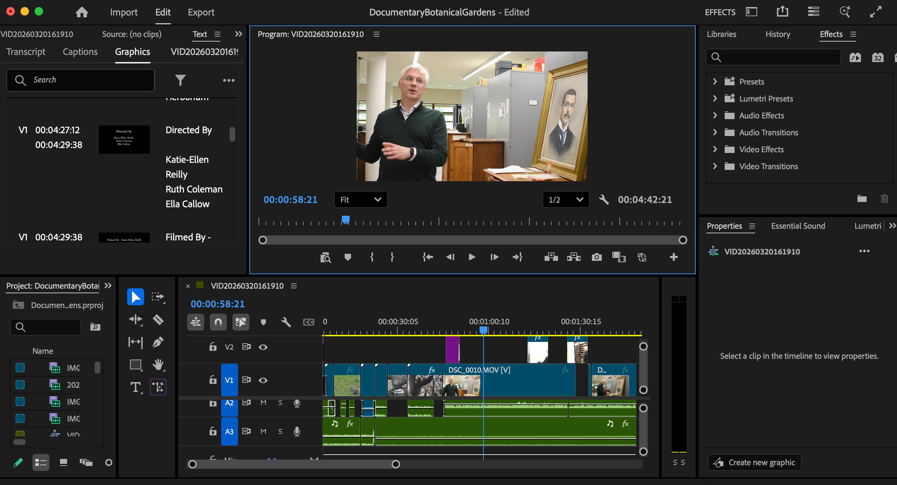
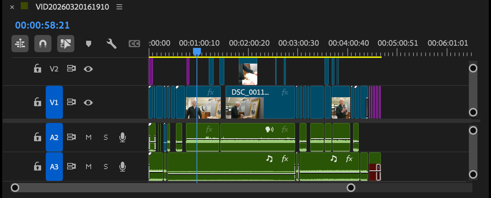
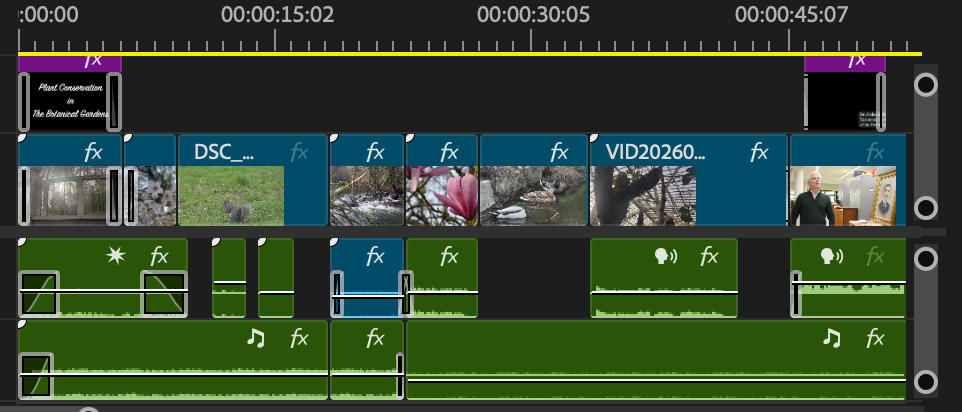

Plant Conservation in the Botanical Gardens
A short documentary on how botanical gardens preserve rare and endangered plants through living collections, herbarium specimens and silica gel DNA samples. The documentary shows why plants are so important and about the community in the Botanical Gardens.



Filmed at the botanical gardens in Dublin and featuring Dr. Colin Kelleher, Taxonomist and Keeper of the Herbarium. I handled planning shots, interviewing Dr. Kelleher and editing the audio and video elements. The images below show the process and timeline behind the editing that I did using Adobe Premier Pro.
I learned a lot during this project about planning for filming, and how to portray the right atmosphere based on the topic of the film, such as using the right audio and transitions. If I were to do a similar project in the future, I would plan for more setbacks to be more prepared on days where you are unable to film or editing issues. I really enjoyed the editing process of this project as I had to teach myself more on Premiere Pro to develop our final product.
← Back home